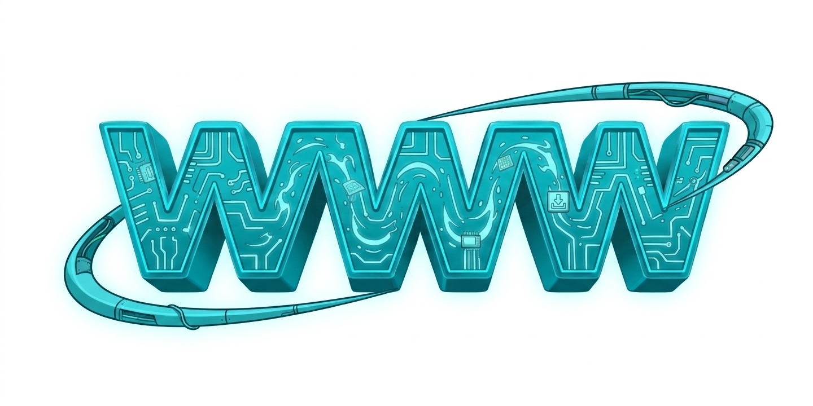

INICIO
HISTÓRIA
BROWSERS
FORMULÁRIO
A internet é uma das maiores invenções da história da humanidade e transformou completamente a forma como as pessoas se comunicam, estudam, trabalham e se divertem. Ela pode ser definida como uma grande rede mundial de computadores e dispositivos eletrônicos conectados entre si, permitindo a troca de informações em questão de segundos. Atualmente, bilhões de pessoas utilizam a internet diariamente para realizar as mais diversas atividades, tornando-a uma ferramenta essencial para a vida moderna.
Seu funcionamento baseia-se na transmissão de dados entre dispositivos conectados por diferentes meios, como fibras ópticas, cabos, antenas e satélites. Sempre que uma pessoa envia uma mensagem, acessa um site, assiste a um vídeo ou realiza uma pesquisa, informações são enviadas e recebidas por meio dessa grande rede. Esse processo acontece em poucos segundos, permitindo que usuários tenham acesso quase imediato aos conteúdos disponíveis.
A internet reúne uma enorme quantidade de informações sobre praticamente todos os assuntos. Por meio dela, é possível pesquisar conteúdos educativos, acompanhar notícias, consultar mapas, ler livros digitais, assistir a aulas, ouvir músicas, ver filmes e participar de cursos online. Ela também facilita o acesso a serviços públicos, instituições financeiras, lojas virtuais e plataformas de atendimento, tornando diversas tarefas do dia a dia mais rápidas e eficientes.
Outro aspecto importante da internet é a comunicação. Ela permite que pessoas conversem em tempo real por mensagens, chamadas de voz ou vídeo, independentemente da distância entre elas. Além disso, possibilita o compartilhamento de fotos, vídeos, documentos e outros tipos de arquivos, tornando a troca de informações muito mais ágil. Empresas, escolas, universidades e organizações também utilizam a internet para manter contato com seus colaboradores, alunos e clientes.
A internet também é um ambiente de aprendizado e produção de conhecimento. Estudantes podem acessar bibliotecas digitais, realizar pesquisas, participar de aulas virtuais e desenvolver novas habilidades por meio de plataformas educacionais. Professores utilizam recursos digitais para preparar aulas, compartilhar materiais e acompanhar o desempenho dos alunos. Dessa forma, a internet amplia as oportunidades de acesso à educação e ao conhecimento.
No ambiente profissional, a internet tornou-se indispensável. Muitas empresas dependem dela para realizar reuniões virtuais, enviar documentos, armazenar informações em nuvem, atender clientes e divulgar produtos e serviços. O trabalho remoto também é possível graças às ferramentas digitais disponíveis na internet, permitindo que profissionais desempenhem suas funções de diferentes locais.
Além da comunicação e do trabalho, a internet oferece inúmeras formas de entretenimento. É possível assistir a filmes, séries, transmissões ao vivo, ouvir músicas, jogar online, acompanhar eventos esportivos e interagir em plataformas digitais. Muitos criadores de conteúdo utilizam a internet para produzir vídeos, textos, podcasts e outros materiais destinados ao público, tornando-a um espaço de criatividade e compartilhamento de ideias.
A internet também é utilizada para realizar compras, pagamentos, transferências bancárias e diversas outras operações financeiras. O comércio eletrônico permite que consumidores adquiram produtos de qualquer lugar, comparando preços e recebendo mercadorias em casa. Da mesma forma, empresas conseguem alcançar clientes em diferentes regiões, ampliando suas oportunidades de negócios.
Apesar de oferecer inúmeras vantagens, a internet deve ser utilizada com responsabilidade. Como qualquer ambiente de comunicação, ela exige cuidados com a segurança das informações pessoais, o respeito aos outros usuários e a verificação da confiabilidade dos conteúdos encontrados. O uso consciente da internet contribui para uma experiência mais segura, produtiva e positiva.
Em resumo, a internet é uma das ferramentas mais importantes da sociedade atual. Ela conecta pessoas, dispositivos e informações em escala mundial, facilitando a comunicação, o acesso ao conhecimento, o trabalho, o entretenimento e diversos serviços essenciais. Sua presença transformou a maneira como as pessoas vivem e interagem, tornando-se um recurso indispensável para o desenvolvimento pessoal, social e profissional.

Criada no final da década de 1980 pelo físico britânico Tim Berners-Lee, a World Wide Web transformou-se na principal interface de comunicação da sociedade moderna. Frequentemente confundida com a própria Internet — que é a infraestrutura física de cabos, roteadores e servidores —, a Web é, na verdade, o serviço de hipermídia que roda sobre essa rede de forma visual. Se por um lado essa invenção democratizou o acesso à informação de maneira inédita na história humana, por outro, consolidou uma dependência estrutural que impõe novos desafios éticos e sociais no século XXI.
Em sua gênese, o propósito da Web era estritamente acadêmico: facilitar o compartilhamento de dados entre cientistas do laboratório CERN através de um sistema unificado. Essa arquitetura foi erguida sobre três pilares técnicos fundamentais: as URLs para localizar os endereços exatos de cada recurso, o protocolo HTTP para transferir os pacotes de dados e a linguagem HTML para estruturar a exibição visual das páginas. Essa base, desenhada para ser aberta e livre de patentes comerciais, foi o grande catalisador para que a tecnologia ultrapassasse os muros universitários e alcançasse o público geral nos anos 1990. O conhecimento, outrora restrito a enciclopédias físicas, passou a ser acessado em frações de segundo.
Com o passar dos anos, a plataforma evoluiu de uma rede estática de leitura para um ecossistema altamente interativo. A consolidação da chamada Web 2.0 converteu usuários passivos em produtores ativos de conteúdo, dando origem às redes sociais e à economia digital colaborativa. No entanto, essa metamorfose trouxe externalidades complexas. A hiperconexão gerou um volume de dados massivo, transformando a atenção humana e a privacidade em mercadorias valiosas. Além disso, a arquitetura algorítmica moderna levanta debates urgentes sobre a rápida disseminação de desinformação e a concentração de poder nas mãos das chamadas Big Techs.
Wikipédia. Internet---Acesso em 2026.
Wikipédia. World Wide Web---Acesso em 2026